MAXimal
добавлено: 8 Sep 2008 22:04
редактировано: 1 Jun 2009 15:46
Содержание [скрыть]
Количество помеченных графов
Дано число 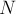 вершин. Требуется посчитать количество 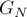 различных помеченных графов с вершинами (т.е. вершины графа помечены различными числами от  до , и графы сравниваются с учётом этой покраски вершин). Рёбра графа неориентированы, петли и кратные рёбра запрещены.
до , и графы сравниваются с учётом этой покраски вершин). Рёбра графа неориентированы, петли и кратные рёбра запрещены.
Рассмотрим множество всех возможных рёбер графа. Для любого ребра  положим, что 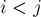 (основываясь на неориентированности графа и отсутствии петель). Тогда множество всех возможных рёбер графа имеет мощность 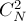, т.е. 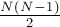.
положим, что 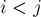 (основываясь на неориентированности графа и отсутствии петель). Тогда множество всех возможных рёбер графа имеет мощность 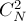, т.е. 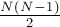.
Поскольку любой помеченный граф однозначно определяется своими рёбрами, то количество помеченных графов с вершинами равно:
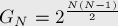
Количество связных помеченных графов
По сравнению с предыдущей задачей мы дополнительно накладываем ограничение, что граф должен быть связным.
Обозначим искомое число через 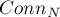.
Научимся, наоборот, считать количество несвязных графов; тогда количество связных графов получится как минус найденное число. Более того, научимся считать количество корневых (т.е. с выделенной вершиной - корнем) несвязных графов; тогда количество несвязных графов будет получаться из него делением на . Заметим, что, так как граф несвязный, то в нём найдётся компонента связности, внутри которой лежит корень, а остальной граф будет представлять собой ещё несколько (как минимум одну) компонент связности.
Переберём количество 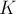 вершин в этой компоненте связности, содержащей корень (очевидно, 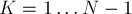), и найдём количество таких графов. Во-первых, мы должны выбрать вершин из , т.е. ответ умножается на 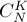. Во-вторых, компонента связности с корнем даёт множитель 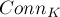. В-третьих, оставшийся граф из 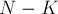 вершин является произвольным графом, а потому он даёт множитель 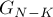. Наконец, количество способов выделить корень в компоненте связности из вершин равно . Итого, при фиксированном количество корневых несвязных графов равно:
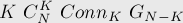
Значит, количество несвязных графов с вершинами равно:
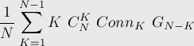
Наконец, искомое количество связных графов равно:
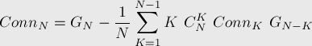
Количество помеченных графов с компонентами связности
Основываясь на предыдущей формуле, научимся считать количество помеченных графов с вершинами и компонентами связности.
Сделать это можно с помощью динамического программирования. Научимся считать 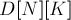 — количество помеченных графов с вершинами и компонентами связности.
Научимся вычислять очередной элемент , зная предыдущие значения. Воспользуемся стандартным приёмом при решении таких задач: возьмём вершину с номером 1, она принадлежит какой-то компоненте, вот эту компоненту мы и будем перебирать. Переберём размер  этой компоненты, тогда количество способов выбрать такое множество вершин равно 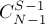 (одну вершину — вершину 1 — перебирать не надо). Количество же способов построить компоненту связности из вершин мы уже умеем считать — это 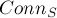. После удаления этой компоненты из графа у нас остаётся граф с 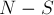 вершинами и 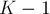 компонентами связности, т.е. мы получили рекуррентную зависимость, по которой можно вычислять значения :
этой компоненты, тогда количество способов выбрать такое множество вершин равно 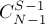 (одну вершину — вершину 1 — перебирать не надо). Количество же способов построить компоненту связности из вершин мы уже умеем считать — это 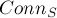. После удаления этой компоненты из графа у нас остаётся граф с 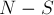 вершинами и 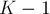 компонентами связности, т.е. мы получили рекуррентную зависимость, по которой можно вычислять значения :
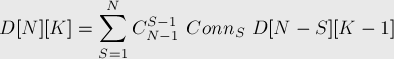
Итого получаем примерно такой код:
int d[n+1][k+1]; // изначально заполнен нулями d[0][0][0] = 1; for (int i=1; i<=n; ++i) for (int j=1; j<=i && j<=k; ++j) for (int s=1; s<=i; ++s) d[i][j] += C[i-1][s-1] * conn[s] * d[i-s][j-1]; cout << d[n][k][n];
Разумеется, на практике, скорее всего, нужна будет длинная арифметика.